引子：从 Wireshark 的 RTPS 解析树说起
RTPS 是 DDS 的互操作线协议（wire protocol），不是 DDS API 本身。DDS 规定了发布/订阅的模型和 QoS，RTPS 规定了这些语义如何落到 UDP/TCP 的字节流上。也正因为如此，ROS 2 里不同 DDS 实现（Fast DDS、Cyclone DDS、Connext 等）才能在同一网段里互相发现、互相收发。
在 Wireshark 里抓一条 ROS 2 或 DDS 的流量，你大概率会看到这样一棵解析树：
RTPS
INFO_TS
DATA展开后是一串十六进制字节。它们看起来像天书，但结构其实非常规整：一条 RTPS 消息就是 一个固定 20 字节的消息头，后面跟着若干条子消息。子消息各管一件事：有的承载用户数据，有的确认收包，有的请求重传，有的只是给后续子消息设置时间戳或目标地址。
本文按 Header、SubmessageHeader、13 种子消息的顺序逐个拆解报文结构。读完你应该能独立看懂 Wireshark 里一条 RTPS 报文的字段布局。
一条 RTPS 消息长什么样
RTPS 消息的结构可以用一句话概括：
Message = Header（20 B）+ Submessage × N
每个 Submessage 又由 4 字节的 SubmessageHeader + 可变长度的 body 组成。所有子消息都相对消息起点按 32 位（4 字节）边界对齐，必要时用 PAD 子消息填充。RTPS 协议本身不携带整条消息的总长度：走 UDP 时，UDP payload 的长度就是消息长度；走 TCP 时，需要额外的长度前缀来界定消息边界。
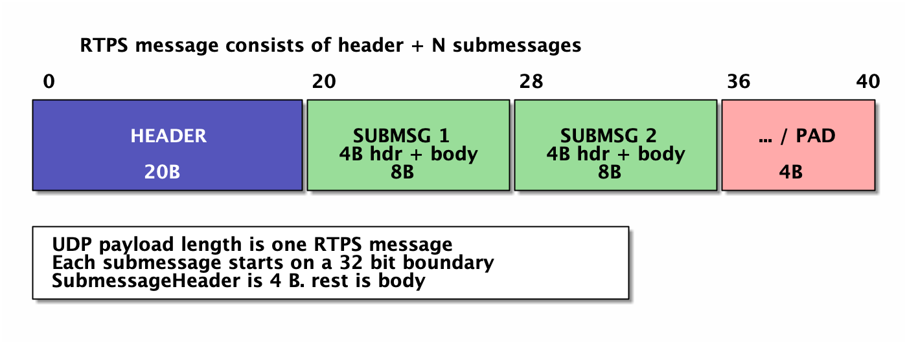
解析一条 RTPS 消息的过程，本质上是一个循环：
- 先读固定的 20 字节 Header；
- 读 4 字节 SubmessageHeader；
- 从
octetsToNextHeader得到这条子消息内容的长度； - 解完当前子消息，跳到下一条的头部，直到消息结束。
octetsToNextHeader 是这套格式的关键。它让接收者可以跳过不认识的子消息，也让 RTPS 能在不破坏兼容性的前提下扩展新类型。32 位对齐也不是形式主义：它让多字节字段落在自然的边界上，接收者可以用固定步长读取，实现也更容易把字节流映射成结构体（端序一致时）。
Header（20 字节）
Header 固定 20 字节，字段很少，但信息量不小。
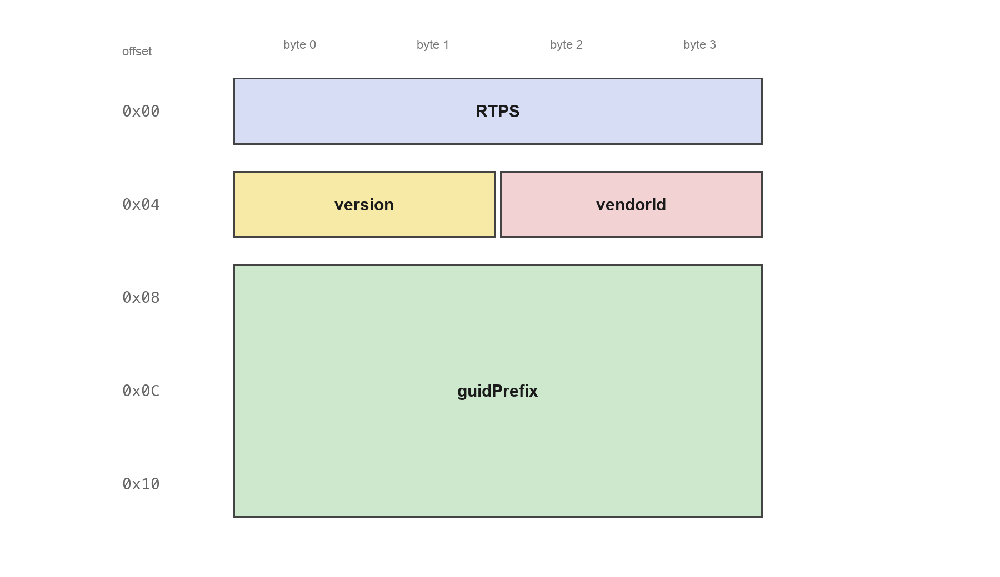
| 偏移 | 长度 | 字段 | 含义 |
|---|---|---|---|
0x00 |
4 B | protocol |
固定 ASCII "RTPS"，即 52 54 50 53 |
0x04 |
2 B | version |
协议版本，major/minor 各 1 字节，如 02 03 表示 2.3 |
0x06 |
2 B | vendorId |
中间件厂商 ID，如 RTI 01 01、eProsima 01 0F |
0x08 |
12 B | guidPrefix |
该 Participant 的 GUID 前缀 |
guidPrefix 是 Header 里最值得展开的字段。RTPS 里的全局唯一标识叫 GUID，由两部分组成：
GUID (16 B) = guidPrefix (12 B) + EntityId (4 B)
EntityId (4 B) = entityKey (3 B) + entityKind (1 B)guidPrefix 标识一个 DomainParticipant，同一个 Participant 内的所有 Writer、Reader 共享它；EntityId 则区分 Participant 内部的具体实体。entityKind 的高 2 位表示实体类别（11 内置、00 用户自定义、01 厂商自定义），低 6 位表示实体类型。几个常见的内置 EntityId：
- Participant：
00 00 01 C1 - SPDP writer：
00 01 00 C2 - SEDP publications writer：
00 00 03 C2 - 用户自定义、带 key 的 writer：kind 为
0x02，例如00 00 01 02
规范还要求 guidPrefix 的前 2 字节等于 vendorId，这样即使同一个 DDS Domain 里混用多家实现，GUID 也不会冲突。
把 GUID 拆成”Participant 前缀 + 实体内标识”的好处是省带宽：一条消息的 Header 只需要带一次 12 字节的 guidPrefix，后续子消息里的 readerId/writerId 都只写 4 字节 EntityId。接收者用 Header（或 INFO_SRC）里的前缀把 EntityId 还原成完整 GUID。
Header 里的 guidPrefix 只是”默认源”。后续子消息可以用 INFO_SRC 改写逻辑源，用 INFO_DST 改写目标 Participant——这也是 RTPS 子消息具有上下文依赖的原因。
SubmessageHeader（4 字节）
每条子消息都以 4 字节开头：
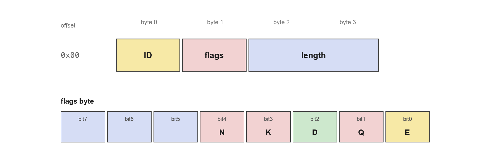
| 偏移 | 长度 | 字段 | 含义 |
|---|---|---|---|
+0 |
1 B | submessageId |
子消息类型 |
+1 |
1 B | flags |
bit0 是端序位 E，其余位按类型解释 |
+2 |
2 B | octetsToNextHeader |
从本子消息内容开始（4 字节头之后）到下一子消息头部的字节数 |
ID 分区：0x00–0x7F 是协议定义范围；其中 0x30–0x3F 被 DDS-Security 保留；0x80–0xFF 是厂商自定义范围。协议范围之外、或者来自未知厂商的 ID，接收者必须用 octetsToNextHeader 跳过，并继续解析后面的子消息。
这种”ID + 长度”的自描述设计，是 RTPS 可扩展性的基础：新版本增加子消息类型时，旧实现只要按长度跳过即可，不需要重新协商协议版本；厂商也可以在自己的 ID 区间里做私有扩展，而不会和标准子消息冲突。
flags：bit0 永远是 E（EndiannessFlag）。E=0 表示该子消息用大端编码，E=1 表示小端。注意这是”每条子消息各自决定”的，不是整条消息统一。其余位按类型解释：
DATA：Q（inline QoS）、D（data）、K（key）、N（非标准 payload）DATA_FRAG：Q、K、N——注意K/N的位置和DATA不同HEARTBEAT：F（final）、L（liveliness）ACKNACK：FINFO_TS：I（invalidate）INFO_REPLY/INFO_REPLY_IP4：M（multicast）
发送者应把未定义位置 0，接收者应忽略不认识的位——这是 RTPS 向前兼容的一部分。
octetsToNextHeader 有三种情况：
- 大于 0：从本子消息内容开始，到下一子消息头部开始的字节数；
- 等于 0：本子消息是消息的最后一条，内容一直延伸到消息末尾。这让单条子消息可以超过 64 KB；
- 等于 0 且类型是
PAD或INFO_TS：下一条子消息头紧跟在当前 4 字节头之后，或者当前子消息就是最后一条。
标准子消息总览
| ID | 子消息 | 方向 | 用途 |
|---|---|---|---|
0x01 |
PAD |
任意 | 对齐填充 |
0x06 |
ACKNACK |
Reader → Writer | 确认收到 / 请求重传 |
0x07 |
HEARTBEAT |
Writer → Reader | 宣告可用序号范围 |
0x08 |
GAP |
Writer → Reader | 宣告某段序号不可用 |
0x09 |
INFO_TS |
任意 | 为后续子消息设置时间戳 |
0x0C |
INFO_SRC |
任意 | 修改后续子消息的逻辑源 |
0x0D |
INFO_REPLY_IP4 |
Reader → Writer | 紧凑的 IPv4 回复地址 |
0x0E |
INFO_DST |
任意 | 修改后续子消息的目标 Participant |
0x0F |
INFO_REPLY |
Reader → Writer | 回复地址列表 |
0x12 |
NACK_FRAG |
Reader → Writer | 请求分片重传 |
0x13 |
HEARTBEAT_FRAG |
Writer → Reader | 分片可用范围 |
0x15 |
DATA |
Writer → Reader | 数据或生命周期变更 |
0x16 |
DATA_FRAG |
Writer → Reader | 分片数据 |
按职责可以分成四类：
- 数据面：
DATA、DATA_FRAG、GAP - 可靠性：
HEARTBEAT、ACKNACK、HEARTBEAT_FRAG、NACK_FRAG - 上下文：
INFO_TS、INFO_SRC、INFO_DST、INFO_REPLY、INFO_REPLY_IP4 - 辅助：
PAD
Header 初始化接收者上下文，INFO_* 修改上下文；其余子消息只影响对应的端点状态，不改变后续子消息的解释方式。
一个常见坑：网上有些旧资料把
ACKNACK写成0x02、HEARTBEAT写成0x03。在 RTPS 2.x 里它们是0x06和0x07；0x02/0x03并不对应这两个子消息。以规范枚举为准。
子消息逐类介绍
从这一节开始，每一种标准子消息单独成节。每节的顺序统一为：
- 先放报文结构图：每行 4 个字节，图中只保留偏移、字段边界和字段名，不写字段说明；
- 再给字段列表：列出每个字段的名称、偏移、长度和简短说明；
- 最后解释语义：说明标志位、方向和典型用法。
DATA（0x15）
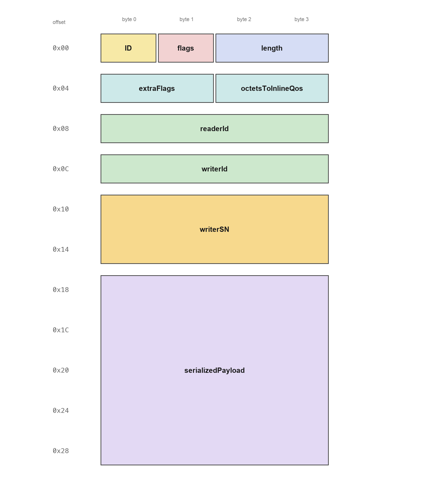
ID（0x00，1 B）：子消息类型，DATA 为0x15。flags（0x01，1 B）：bit0E；bit1Q；bit2D；bit3K；bit4N。length（0x02，2 B）：octetsToNextHeader，即本子消息内容的长度。extraFlags（0x04，2 B）：额外标志位，本版本置 0。octetsToInlineQos（0x06，2 B）：到 inline QoS 的字节偏移；无 inline QoS 时指向 payload 起点。readerId（0x08，4 B）：目标 Reader；全 0 表示所有 Reader。writerId（0x0C，4 B）：源 Writer 的 EntityId。writerSN（0x10，8 B）：64 位序号，从 1 开始。inlineQoS（0x18，0 B，可选）：Q=1时存在。serializedPayload（0x18，20 B）：序列化 payload，前 4 字节是表示头。
DATA 由 Writer 发给 Reader，承载一次数据变更。writerSN 编码时拆成两个 32 位字；readerId=0 表示目标 Participant 内该 Writer 的所有 Reader。flags 的 Q/D/K/N 组合决定 payload 的含义：D=1,K=0 是数据，D=0,K=1 是 key，D=0,K=0 不带 payload，D=1,K=1 在 RTPS 2.3 中是非法组合。
DATA_FRAG（0x16）
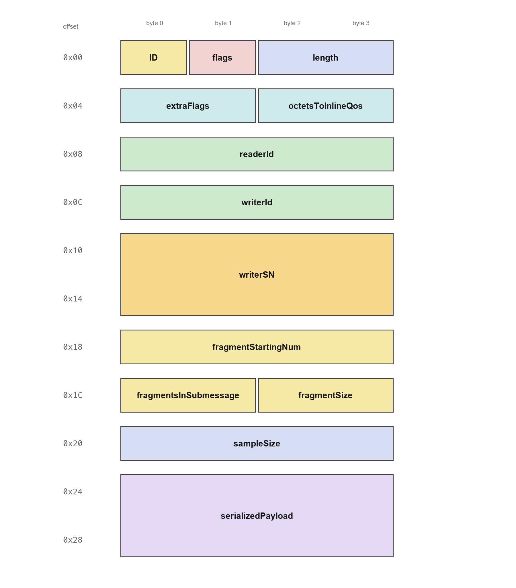
ID（0x00，1 B）：子消息类型，0x16。flags（0x01，1 B）：bit0E；bit1Q；bit2K；bit3N。length（0x02，2 B）：octetsToNextHeader，即本子消息内容的长度。extraFlags（0x04，2 B）：额外标志位，置 0。octetsToInlineQos（0x06，2 B）：到 inline QoS 的字节偏移；无 inline QoS 时指向 payload 起点。readerId（0x08，4 B）：目标 Reader。writerId（0x0C，4 B）：源 Writer。writerSN（0x10，8 B）：所属数据的序号。fragmentStartingNum（0x18，4 B）：起始分片号，从 1 开始。fragmentsInSubmessage（0x1C，2 B）：本子消息包含的分片数。fragmentSize（0x1E，2 B）：每个分片的大小。sampleSize（0x20，4 B）：原始数据总大小。serializedPayload（0x24，8 B）：本分片数据。
DATA_FRAG 把 DATA 的 payload 拆成分片；sampleSize 是原始数据总长，fragmentsInSubmessage × fragmentSize 应覆盖本次携带的分片数据。注意 DATA_FRAG 的 K/N 位在 bit2/bit3，而 DATA 的 D/K/N 在 bit2/bit3/bit4，解析时不能直接套用。
GAP（0x08）
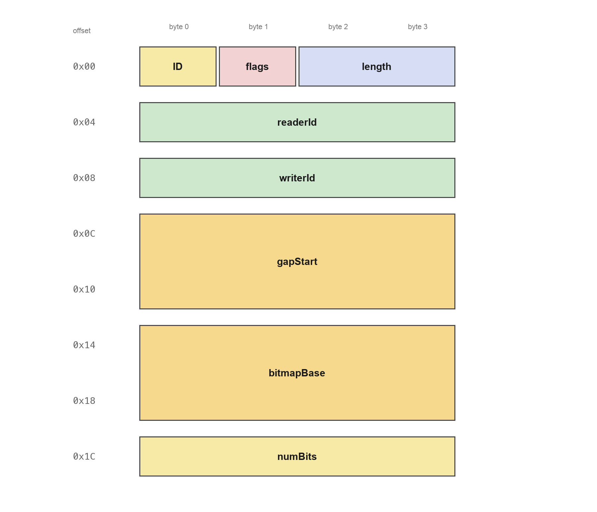
ID（0x00，1 B）：子消息类型，0x08。flags（0x01，1 B）：E端序位。length（0x02，2 B）：octetsToNextHeader，即本子消息内容的长度。readerId（0x04，4 B）：目标 Reader。writerId（0x08，4 B）：源 Writer。gapStart（0x0C，8 B）：不可用区间的起始序号。bitmapBase（0x14，8 B）：gapList的起始序号。numBits（0x1C，4 B）：gapList的有效位数；0 表示只有连续区间。
GAP 告诉 Reader“某段序号不用再等”：gapStart 到 gapList.base - 1 之间的序号被视为不可用；gapList 可以再列出额外的不可用序号。GAP 不携带用户数据。
HEARTBEAT（0x07）
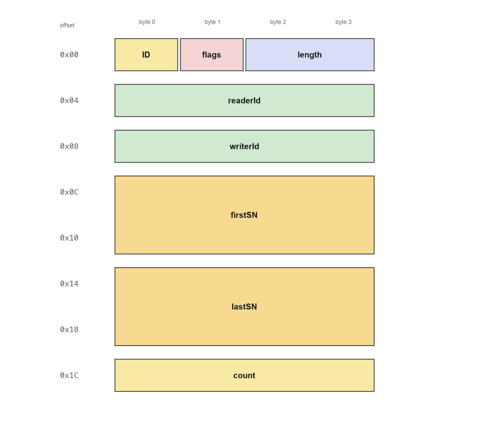
ID（0x00，1 B）：子消息类型，0x07。flags（0x01，1 B）：bit0E；bit1F；bit2L。length（0x02，2 B）：octetsToNextHeader，即本子消息内容的长度。readerId（0x04，4 B）：目标 Reader。writerId（0x08，4 B）：源 Writer。firstSN（0x0C，8 B）：可用范围的起始序号。lastSN（0x14，8 B）：可用范围的结束序号。count（0x1C，4 B）：发送计数器，用于识别重复。
HEARTBEAT 由 Writer 发出，宣告 firstSN..lastSN 范围内的序号可用。F=0 表示 Reader 必须回一个 ACKNACK，F=1 表示不需要；L=1 用于刷新手动 liveliness；count 每发一次递增。
ACKNACK（0x06）
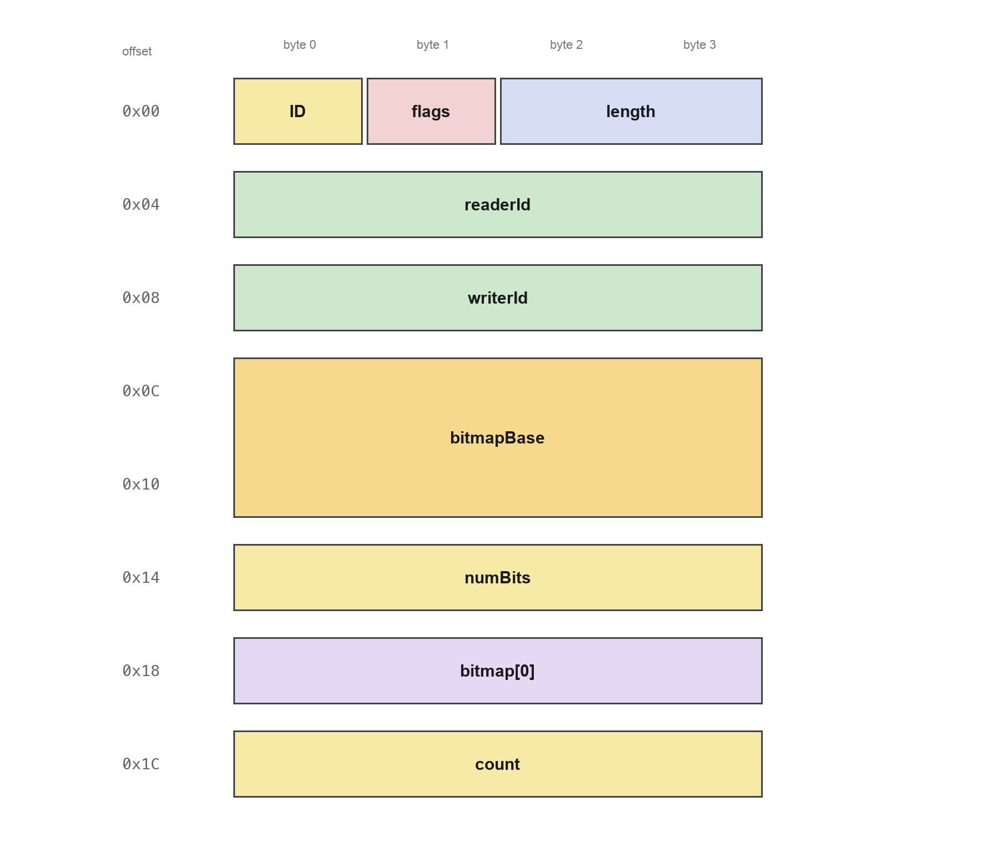
ID（0x00，1 B）：子消息类型，0x06。flags（0x01，1 B）：bit0E；bit1F。length（0x02，2 B）：octetsToNextHeader，即本子消息内容的长度。readerId（0x04，4 B）：发起确认的 Reader。writerId（0x08，4 B）：被确认的 Writer。bitmapBase（0x0C，8 B）：位图的起始序号。numBits（0x14，4 B）：有效位数。bitmap[0]（0x18，4 B）：第一个位图字，MSB 对应bitmapBase。count（0x1C，4 B）：发送计数器。
ACKNACK 由 Reader 发出，用 SequenceNumberSet 告诉 Writer 缺哪些序号。F=0 表示 Writer 必须回一个 HEARTBEAT；count 用于识别重复。位图是 MSB-first：最高位对应 bitmapBase，某位为 1 表示该序号缺失。
HEARTBEAT_FRAG（0x13）
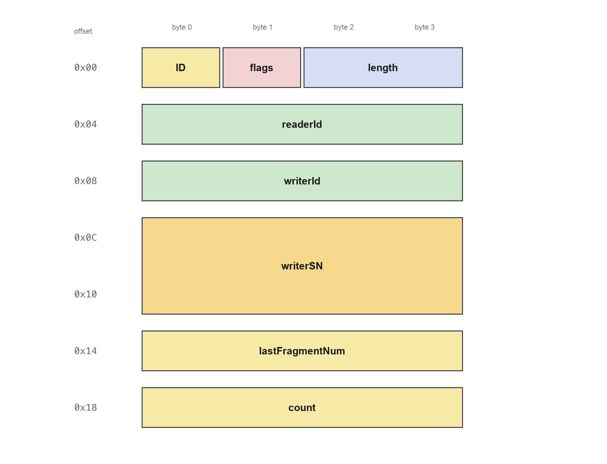
ID（0x00，1 B）：子消息类型，0x13。flags（0x01，1 B）：E端序位。length（0x02，2 B）：octetsToNextHeader，即本子消息内容的长度。readerId（0x04，4 B）：目标 Reader。writerId（0x08，4 B）：源 Writer。writerSN（0x0C，8 B）：所属数据的序号。lastFragmentNum（0x14，4 B）：可用分片的上界。count（0x18，4 B）：发送计数器。
HEARTBEAT_FRAG 针对单个 writerSN 通告分片可用范围：lastFragmentNum 表示 1..N 号分片可用。Reader 如果缺分片，用 NACK_FRAG 请求重传。
NACK_FRAG（0x12）
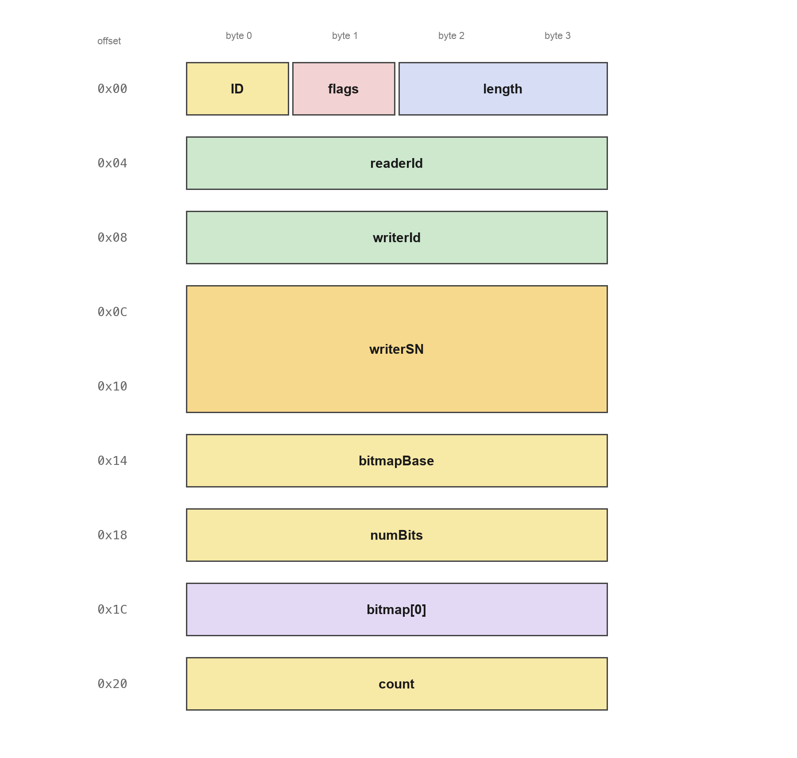
ID（0x00，1 B）：子消息类型，0x12。flags（0x01，1 B）：E端序位。length（0x02，2 B）：octetsToNextHeader，即本子消息内容的长度。readerId（0x04，4 B）：发起请求的 Reader。writerId（0x08，4 B）：被请求的 Writer。writerSN（0x0C，8 B）：所属数据的序号。bitmapBase（0x14，4 B）：分片位图的起始分片号。numBits（0x18，4 B）：有效位数。bitmap[0]（0x1C，4 B）：第一个位图字。count（0x20，4 B）：发送计数器。
NACK_FRAG 是分片级的 ACKNACK：FragmentNumberSet 由 bitmapBase(4) + numBits(4) + bitmap(4×M) 组成，位图含义与序号位图相同，只是对象换成分片号。
INFO_TS（0x09）
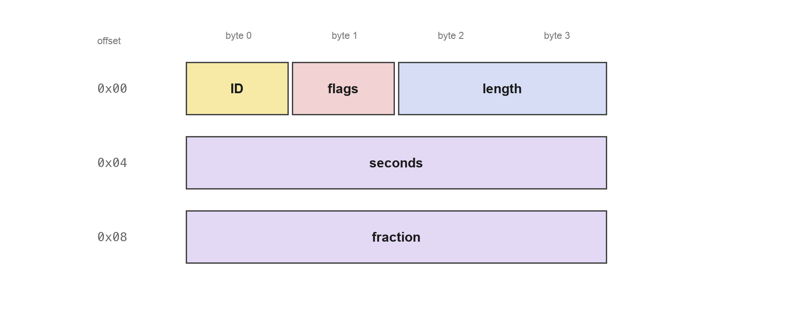
ID（0x00，1 B）：子消息类型，0x09。flags（0x01，1 B）：bit0E；bit1I。length（0x02，2 B）：带 timestamp 时为 8；I=1时为 0。seconds（0x04，4 B）：秒数，int32。fraction（0x08，4 B）：秒的小数部分，单位2^-32秒。
INFO_TS 给后续子消息设置时间戳。I=1 时 timestamp 被省略，子消息只有 4 字节头，表示后续子消息没有有效时间戳。
INFO_DST（0x0E）
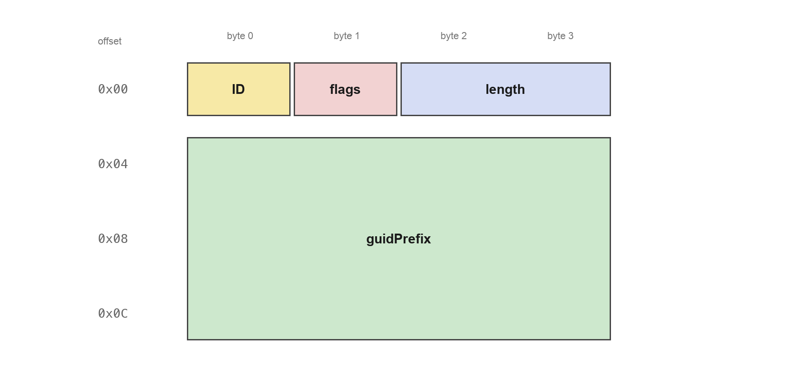
ID（0x00，1 B）：子消息类型，0x0E。flags（0x01，1 B）：E端序位。length（0x02，2 B）：octetsToNextHeader，即本子消息内容的长度。guidPrefix（0x04，12 B）：新的目标 Participant 前缀。
INFO_DST 只带一个 12 字节 guidPrefix，用于修改后续子消息的目标 Participant。它不承载用户数据，属于上下文类子消息。
INFO_SRC（0x0C）
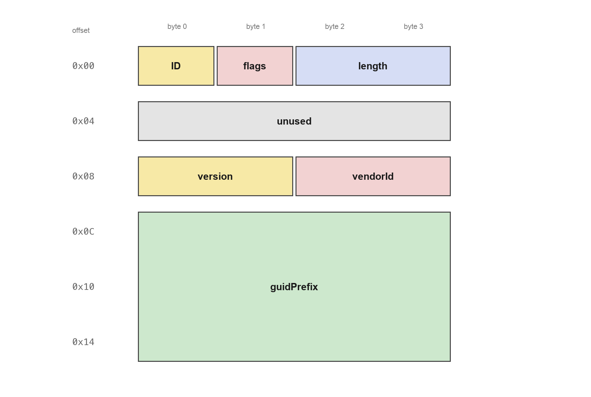
ID（0x00，1 B）：子消息类型，0x0C。flags（0x01，1 B）：E端序位。length（0x02，2 B）：octetsToNextHeader，即本子消息内容的长度。unused（0x04，4 B）：保留字段，必须为 0。version（0x08，2 B）：协议版本。vendorId（0x0A，2 B）：厂商 ID。guidPrefix（0x0C，12 B）：新的源 Participant 前缀。
INFO_SRC 修改后续子消息的逻辑源；收到后，接收者用新的 guidPrefix 还原后续子消息里的 EntityId。
INFO_REPLY（0x0F）
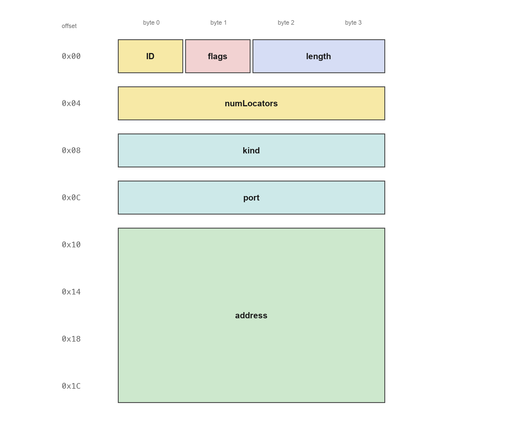
ID（0x00，1 B）：子消息类型，0x0F。flags（0x01，1 B）：bit0E；bit1M。length（0x02，2 B）：octetsToNextHeader，即本子消息内容的长度。numLocators（0x04，4 B）：单播 locator 数量。kind（0x08，4 B）：locator 类型，UDPv4 为 1。port（0x0C，4 B）：端口。address（0x10，16 B）：地址，IPv4 只占前 4 字节。- multicast LocatorList：可选，
M=1时追加。
INFO_REPLY 告诉 Writer 回复时应该发到哪里。LocatorList = numLocators(4) + N × Locator_t，每个 Locator_t = kind(4) + port(4) + address(16)。
INFO_REPLY_IP4（0x0D）
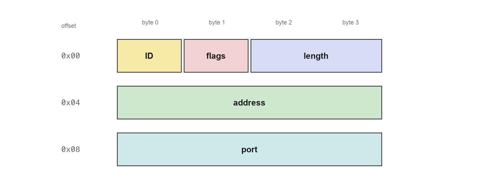
ID（0x00，1 B）：子消息类型，0x0D。flags（0x01，1 B）：bit0E；bit1M。length（0x02，2 B）：octetsToNextHeader，即本子消息内容的长度。address（0x04，4 B）：IPv4 地址。port（0x08，4 B）：端口。- multicast address/port：可选，
M=1时追加。
INFO_REPLY_IP4 是 INFO_REPLY 的 UDP/IPv4 紧凑版本，语义与 INFO_REPLY 中的单个 UDPv4 locator 等价。
PAD（0x01）
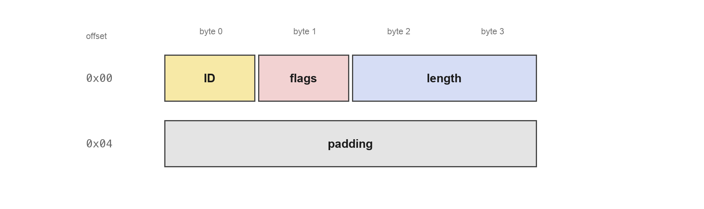
ID（0x00，1 B）：子消息类型，0x01。flags（0x01，1 B）：E端序位。length（0x02，2 B）：填充字节数。padding（0x04，N B）：填充内容，接收者忽略。
PAD 用于让下一条子消息从 32 位边界开始。octetsToNextHeader=0 时有一个特殊规则：下一条子消息头紧跟在当前 4 字节头之后，或者当前 PAD 就是最后一条。
Qos
user_data，字符串类型，用于传递一些信息（比如网络绑定的 service name 等），用于 domain，participant，datareader 和 datawriter
topic_data，字符串类型，用于传递一些信息，用于 topic
group_data，字符串类型，用于传递一些信息，用于 publisher 和 subscriber
durability，枚举类型，表示是否需要对收到的 change 进行 cache，可选值有 volatile（不 cache），transient_local，transient（在内存 cache） 和 persistent（持久化存储），用于 topic，datareader 和 datawriter
Deadline，数值类型，表示 endpoint 预期在一定的时间内需要收到对端的消息，如果没有收到，就会调用 onrequesteddeadlinemissed（周期性）
latency_budget，数值类型，表示 writer 的消息，到 reader，允许的最大时延（如果超过了，会怎样，规范没有说）
Ownership，表示是否允许多个 writer 写入同一个 topic，同时多个 writer 有优先级的区分
liveliness，保活机制，表示是在哪些范畴之间的
参考资料
- OMG DDSI-RTPS 2.3 规范：https://www.omg.org/spec/DDSI-RTPS/2.3/PDF
- Fast-DDS
RTPS_messages.hpp（子消息 ID 与结构定义）：https://github.com/eProsima/Fast-DDS/blob/master/include/fastdds/rtps/messages/RTPS_messages.hpp